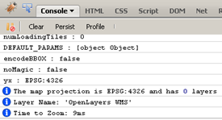

2010-04-13 20:07
admin
bugs, documentation, javascript, programming, web development
debugging, firebug, firefox, javascript, logging, openlayers
logging-openlayers-with-firebug
published
I take it as given that anyone developing with Firefox and OpenLayers has Firebug installed. Firebug has a number of powerful tools that can make the previous nightmare of JavaScript debugging tolerable.
One feature I recently “discovered” are the logging options. It’s definitely a timesaver over my previous method of putting temporary alert(vals); throughout my code. As well as debugging the logging is very useful for automatically documenting formulae in JavaScript with worked examples that can then be pasted straight into the documentation.
An example of the logging capabilities can be seen on my sample OpenLayers page. If you already have Firebug installed you should be able to see the output similar to that below when the page loads.
The full range of options for logging can be seen in the Firebug Console API wiki page. The sample page has a few different logging options briefly explained below.
To list all properties and functions for the layer object simply add:
console.dir(layer);
To list only an objects properties (without all its associated functions), use a construct similar to:
//an alternative to just list properties
var prop;
for (prop in layer) {
if (typeof layer[prop] !== 'function') {
console.log('%s : %s', prop, layer[prop]); //log values to Firebug
}
}
This example below prints details about the map object. Handily Firebug adds a hyperlink in the output to the line where console.info is called. String substitutions can be used (e.g. replace %s with a string, or %i with an integer) for easier formatting.
// write out some info
console.info("The map projection is %s and has %i layers", map.projection, map.layers.length);
console.info('Layer Name: \'%s\'', layer.name);
Assertions can be placed in code as follows:
// make an assertion
console.assert(map.layers.length === 1);
I was taught to use the assert statement as often as possible in code. Its amazing (and disconcerting) how many times “impossible” situations can occur. Whilst assertions are normally removed from production code for desktop applications, a JavaScript error message may prove invaluable when trying to debug a user’s problem remotely. As with everything in programming its a personal choice whether or not to use assertions ?” some people clearly assertions are evil.
The console API also supports timers, and writing out the call stack at points in your application for when things start getting more complicated.
This function makes sure that no JavaScript errors are thrown for browsers without Firebug installed. It is included in the sample.
Sometimes you may have to restart your browser, or make sure there is only one instance of Firefox is running for the logging messages to appear.
Internet Explorer 8 has similar development tools that can be downloaded from the Microsoft site. It appears to support similar logging functions as Firebug, but I’ve not gone into these in any depth.
Comments
1. SQL Server 2008 Spatial and Oracle Spatial comparison and cheat sheet « Mapoholic **
[…] SQL Server does not support any true Linear referencing functions. SQL Server Spatial Tools however, provides some rudimentary linear referencing functions such as LocateAlongGeog and LocateAlongGeom which will return the point at a given instance along a linear object. UPDATED: Geographica provides an updated version of SQLSpatialTools which includes a new function to display a linear event as well (a “LocateLineAlongGeom” function but called CreateLinearReferenceFeature. More details can be found at this address: http://geographika.co.uk/linear-referencing-in-sql-server-2008 […]
Reply2. Marco Giana **
Hi ya,
how do I down load the code. I went to https://bitbucket.org/geographika/sql-server-spatial-tools but I cannot figure out how to down load the code as there is nothing in the download link.
Your assistance would be much appreciated.
Cheers
Marco
Reply3. Marco Giana **
Not to worry I figured it out. :)
Reply4. Cristian Andres Galindo **
Hello,
does this function use the M parameter in the line object? or use the geographic length of the line?
thanks
ReplyAdd Comment